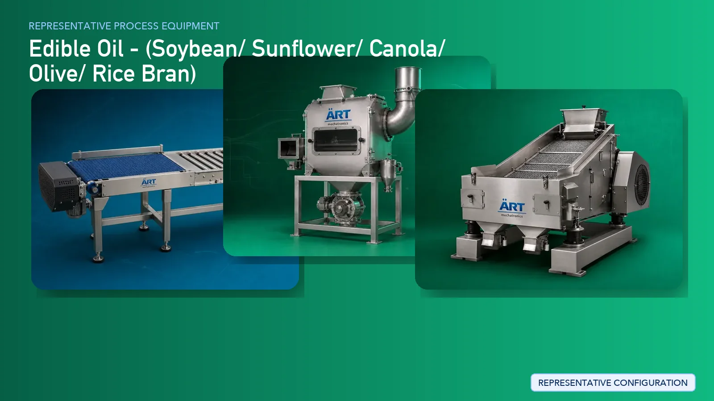

Edible Oil Processing Plant & Machinery Solutions (Oil Extraction & Refinery Systems)
Edible oil processing is one of the most critical industries in the global food supply chain, producing oils from seeds such as soybean, sunflower, canola, olive, rice bran, and other oil-bearing materials. The process involves seed preparation, oil extraction, refining, filtration, and packaging…

About Edible Oil - processing
ART Mechatronics provides complete turnkey solutions for edible oil processing plants, offering advanced systems for seed preparation, extraction, refining, and packaging. Our solutions are designed for high oil yield, energy efficiency, and large-scale industrial production for domestic and export markets.
Complete Edible Oil Process Flow
Oilseeds are received, cleaned, and prepared for processing.
Ensures clean raw material input.
Seeds are conditioned to prepare for oil extraction.
Ensures:
- Softening of seeds
- Improved oil extraction efficiency
Seeds are processed to improve oil recovery.
Increases surface area for extraction.
Machines Used:
- Oil Expeller
- Solvent Extraction (FOR LARGE PLANTS):
- Oil is extracted using solvents
Machines Used:
- Solvent Extraction Plant
Ensures:
- Maximum oil recovery
- High efficiency
Crude oil is filtered to remove impurities.
Crude oil is refined to make it edible. Processes Included:
Machines Used:
- Oil Refinery System
Ensures:
- Food-grade oil
- Improved color, taste, and odor
Wax is removed from oils like sunflower.
Refined oil is stored before packaging.
Oil is packed into bottles, pouches, or bulk containers.
Suitable for:
- Retail FMCG
- Bulk supply
Oils Processed
- Soybean Oil
- Sunflower Oil
- Canola Oil
- Olive Oil
- Rice Bran Oil
- Mustard Oil
- Groundnut Oil
- Other Edible Oils
Machinery Required for Oil Processing Plant
- Material Handling Systems
- Pre Cleaner
- Destoner
- Magnetic Separator
- Conditioning System
- Dehuller / Cracker
- Flaking Machine
- Oil Expeller / Solvent Extraction Plant
- Filter Press
- Oil Refinery System
- Dewaxing System
- Storage Tanks
- Packaging Machines
Turnkey Edible Oil Plant Solutions
ART Mechatronics offers complete turnkey solutions for edible oil processing plants, including:
- Process design & plant layout
- Seed preparation systems
- Oil extraction systems
- Refinery plant setup
- Automation & control panels
- Packaging line integration
- Installation & commissioning
- After-sales support
We customize solutions based on:
- Seed type
- Production capacity
- Extraction method (expeller / solvent)
- Refining requirements
Why Choose Art Mechatronics
- Expertise in large-scale oil processing systems
- High oil recovery efficiency
- Advanced refining technology
- Energy-efficient plant design
- Fully automated industrial solutions
- Global export capability
Machinery in a Edible Oil - plant
Where it's used
Get pricing & specs for the Edible Oil - plant
Share the product, target capacity, current process and plant location. These details help our engineers discuss the right machine or line configuration.
One partner, from design to start-up
ART Mechatronics designs, manufactures, installs and commissions your Edible Oil - solution with regional presence in India, UAE and Thailand.